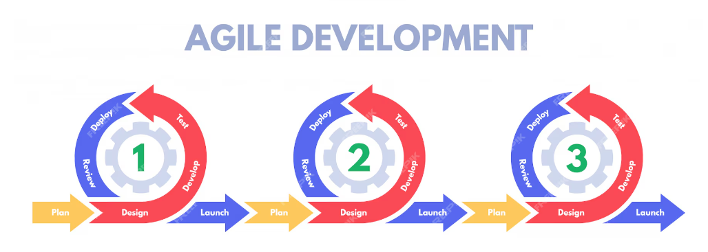
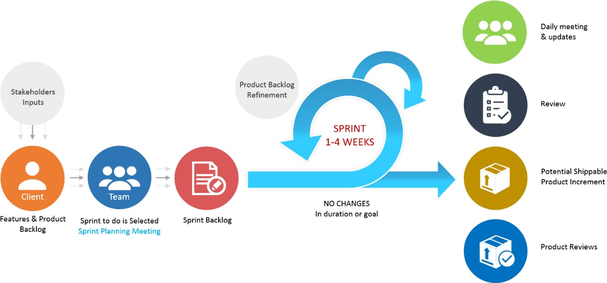

Processo de Desenvolvimento de Software
Abordagem Ágil:
Considerando que nossa ferramenta será uma peça fundamental no ambiente de trabalho do cliente, é essencial mantermos um fluxo de feedback contínuo. A comunicação informal é favorecida devido ao envolvimento prévio de um dos nossos integrantes com o cliente, além do contexto de equipe reduzida.
Dada a restrição de tempo e a necessidade de adaptação rápida às demandas e preferências do cliente, a abordagem Ágil emerge como a escolha mais apropriada. Essa metodologia nos permite ser flexíveis e ágeis na entrega de valor, ajustando-nos de maneira eficaz às mudanças e às especificidades do projeto.

Ciclo de Vida: Ágil (Iterativo e Incremental)
No contexto do ciclo de vida ágil, adotamos uma abordagem iterativa e incremental que se alinha perfeitamente com as necessidades de acesso antecipado do cliente a funcionalidades específicas, mesmo antes da conclusão final do software.
Destacamos a participação ativa do cliente com Feedback como um pilar fundamental. A colaboração entre o grupo e cliente é maximizada, permitindo um entendimento mais profundo das necessidades em evolução e aprimorando a capacidade de adaptação do produto às expectativas em constante mudança.
Essa abordagem promove não apenas um maior alinhamento entre as partes envolvidas, mas também permite a entrega de valor de forma progressiva e tangível ao longo do ciclo de desenvolvimento, garantindo que o software evolua de maneira colaborativa e eficiente para atender às necessidades e expectativas do cliente.
Processo: ScrumXP
o ScrumXP é uma abordagem que combina a gestão de projeto do Scrum com as práticas técnicas do eXtreme Programming (XP), oferecendo um ambiente propício para a flexibilidade, feedback constante, ritmo de entrega sustentável e entregas constantes e incrementais.
-
Flexibilidade dos Requisitos: O ScrumXP permite a flexibilidade dos requisitos ao adotar ciclos curtos de desenvolvimento (sprints), nos quais os requisitos podem ser ajustados e priorizados de acordo com as necessidades do cliente e as condições do mercado em constante mudança.
-
Feedback Constante: Com o ScrumXP, o feedback contínuo é incorporado ao processo através de revisões frequentes de incrementos do produto e cerimônias como reuniões diárias (daily stand-ups), revisões de sprint e retrospectivas. Isso garante que a equipe esteja sempre alinhada com as expectativas dos stakeholders e possa realizar ajustes rapidamente.
-
Ritmo de Entrega: A metodologia ScrumXP promove um ritmo de entrega consistente e previsível, com a conclusão de incrementos de produto funcionais no final de cada sprint. Isso permite que a equipe entregue valor de forma regular ao longo do tempo, mantendo um fluxo de trabalho estável e eficiente.
-
Práticas de Testes Integradas: No ScrumXP, os testes são incorporados desde o início do desenvolvimento. A metodologia promove o desenvolvimento orientado por testes (TDD - Test-Driven Development), onde os testes são escritos antes da implementação do código. Isso garante que cada incremento de funcionalidade seja acompanhado por testes automatizados que validam seu comportamento esperado.

| Nome da Atividade | Método | Ferramentas | Entrega |
|---|---|---|---|
| Elicitação e Descoberta | Reunião com o Cliente, Brainstorming | Google Meet, Google Docs | Definir RFs e RNFs iniciais e entendimento geral do projeto. |
| Análise e Consenso | Feedback | Google Meet, Google Docs | Refinar RFs e RNFs finais e sugestão de funcionalidades. |
| Declaração | Feedback, Tema, Épicos e Histórias de Usuário | Google Meet, Google Sheets | Especificação dos RFs e Histórias de Usuário. |
| Representação | Prototipação rápida | Figma | Protótipo básico. |
| Verificação e Validação | Feedback | Github Projects | Backlog e Priorização de RFs. |
| Organização e Atualização | Kanban (Scrum board) | Github Projects | Backlog e Priorização de RFs. |
Atividades de Requisitos
Elicitação e Descoberta:
Durante esta fase inicial, realizamos reuniões com o cliente e sessões de brainstorming para identificar e entender as necessidades e requisitos iniciais do projeto. Isso nos permitiu definir os RFs e RNFs iniciais e obter uma compreensão geral do escopo do projeto. Durante as iterações pode ocorrer a adição ou correção de algum RF ou RNF de acordo com as necessidades do projeto.
Análise e Consenso:
Aqui, o feedback obtido durante a elicitação é analisado em detalhes. Os requisitos são refinados com base nas informações coletadas, e são propostas sugestões de funcionalidades específicas. O objetivo é chegar a um consenso sobre os requisitos finais que atendam às necessidades do cliente.
Declaração:
Após a análise, os requisitos refinados são formalizados nesta fase. Isso inclui a documentação detalhada dos RFs, temas, épicos e histórias de usuário. Esta é a etapa onde os requisitos são especificados de forma clara e completa.
Verificação e Validação:
Uma vez especificados, os requisitos passarão por uma revisão detalhada para garantir sua precisão, completude e consistência. O feedback contínuo é incorporado ao processo através de revisões regulares dos requisitos e da validação com o cliente a cada iteração. E também serão desenvolvidos testes de software para ajudar na validação dos requisitos do sistema.
Representação:
Durante todo o processo, os requisitos serão representados por meio de prototipagem rápida. Isso permite uma visualização mais tangível e uma melhor compreensão dos requisitos por parte do cliente.
Organização e Atualização:
Por fim, os requisitos serão organizados e atualizados continuamente ao longo do desenvolvimento. Isso será feito através de um Kanban (Scrum board) em uma ferramenta de gerenciamento de projetos como o GitHub Projects, garantindo que os requisitos sejam gerenciados de forma eficaz e priorizados corretamente.